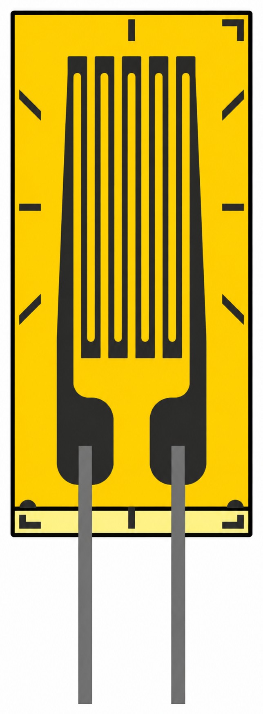
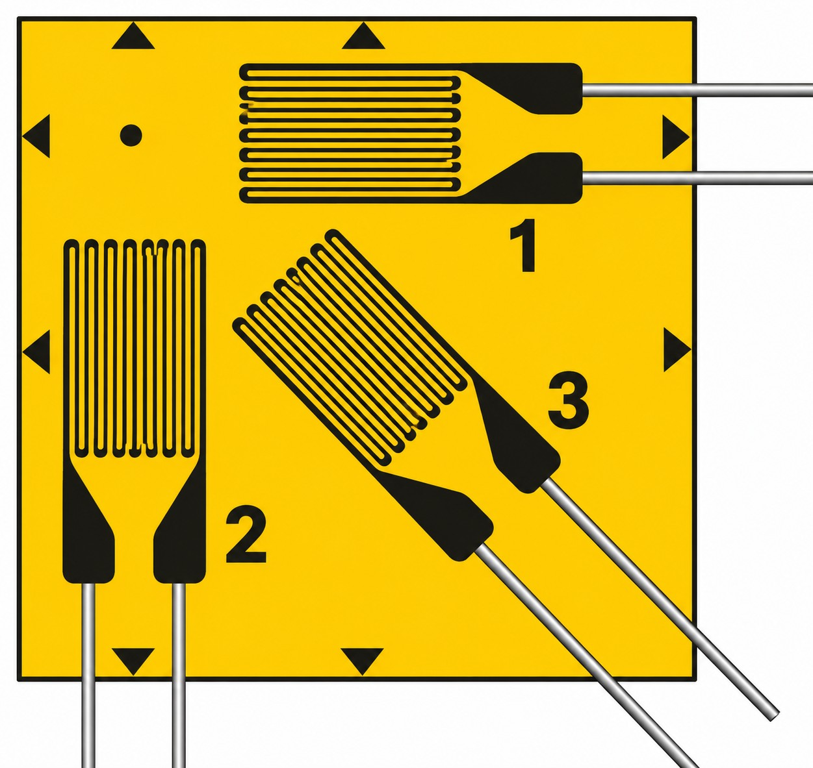

고온용 스트레인게이지
(High-Temperature Strain Gauge)
200~800℃ 환경에서 사용하는 고온용 스트레인게이지의 종류를 TML(도쿄쇼키)와 HBK(HBM) 제품 중심으로 비교하고, 온도대별 선정 기준을 정리했습니다.
TML HZF 기준
TML AWHU 기준
가장 낮은 값
고온용 스트레인게이지가 따로 필요한 이유
일반 스트레인게이지(Cu-Ni 합금 포일 + 폴리이미드·에폭시 베이스)는 대부분 약 80~150℃에서 사용 한계에 도달합니다. 그 이상의 온도에서는 다음 네 가지 문제가 동시에 커지기 때문에, 격자 합금·베이스·접착제·리드선을 모두 고온용으로 바꾼 전용 게이지를 사용합니다.
- Apparent Strain(열출력, Thermal Output) — 하중이 없어도 온도만으로 출력이 발생합니다. 자기온도보상 범위를 벗어나면 그 양이 급격히 커집니다.
- 게이지율의 온도 변화 — 고온에서는 게이지율 자체가 변하므로 감도 보정이 필요합니다.
- 영점 드리프트·크리프 — 접착층과 베이스가 고온에서 서서히 변형되어 정적(장시간) 측정의 영점이 흔들립니다.
- 절연저항 저하·산화 — 접착제·코팅·리드선 피복이 열화되고 금속 표면이 산화되면서 신호가 불안정해집니다.
핵심 원칙: 측정 시스템의 사용 온도는 게이지 · 접착제 · 리드선 · 납땜/결선 · 코팅재 중 가장 낮은 온도로 결정됩니다. 게이지만 300℃용으로 골라도 접착제나 리드선이 200℃급이면 전체 시스템은 200℃입니다.
게이지 패턴 종류: 단축(리니어)과 3축 로제트
측정 목적에 따라 격자 패턴을 선택합니다. 한 방향 변형률은 단축(리니어) 게이지로, 주응력 방향을 모르는 경우에는 3축 로제트로 측정합니다. 고온용 제품도 같은 패턴 구성으로 제공됩니다.


온도대별 선정 가이드
| 최고 사용온도 | 권장 방식 | TML(도쿄쇼키) | HBK(HBM) |
|---|---|---|---|
| ~80℃ | 일반 접착형 | F 시리즈 등 일반 게이지 | Y 시리즈 + 상온 접착제(Z70) |
| ~200℃ | 고온 접착형 (폴리이미드) | QF (Cu-Ni, −20~+200℃) | Y 시리즈 + X280 / EP150 / EP250 등 (정적 −70~+200℃) |
| ~250℃ | 고온 접착형 | ZF / EF / HZF | C 시리즈 (−269~+250℃, CrNi 격자) |
| ~300℃ | 고온 접착형 (Ni-Cr 포일) | ZF (−20~+300℃), EF 단축 (−196~+300℃) | 용접형 LS31 (단시간 300℃) |
| ~350℃ | 고온 접착형 (전용 리드 용접) | HZF (−196~+350℃) | — |
| 300~800℃ | 용접형(스폿용접) | AWM(300℃) · AWH(600/650℃) · AWHU · AWMD(800℃) | LS31 (공식 페이지 기준 +250℃, 단시간 300℃) |
※ 온도 범위는 각 사 카탈로그·공식 제품 페이지 기준이며, 실제 사용 가능 온도는 조합하는 접착제·리드선·코팅재에 따라 낮아질 수 있습니다. 주문 전 최신 데이터시트로 확인하시기 바랍니다.
TML(도쿄쇼키) 고온용 스트레인게이지
TML은 200℃급 QF, 300℃급 ZF·EF, 350℃급 HZF로 고온 접착형 라인업이 구분되어 있습니다. 300℃급 이상(ZF·EF·HZF)은 Ni-Cr 합금 포일 격자 + 폴리이미드 베이스 구조이며, 결선부에는 고융점 땜납이 사용됩니다.
| 시리즈 | 사용온도 | 자기온도보상 범위 | 격자 / 베이스 | 적용 접착제 (접착제별 온도) | 특징 |
|---|---|---|---|---|---|
| QF | −20~+200℃ | +10~+100℃ | Cu-Ni / 폴리이미드 | CN, C-1, NP-50B | 200℃급 범용, 단축·다축·응력집중용 패턴 |
| ZF | −20~+300℃ | +10~+100℃ | Ni-Cr / 폴리이미드 | NP-50B (−20~+300℃) C-1·EB-2 (−20~+200℃) CN (−20~+120℃) | 300℃급 대표 모델, 단축·2축·3축 로제트, PTFE 리드 일체형 가능 |
| EF | 단축 −196~+300℃ 다축 −196~+200℃ | +10~+150℃ (다축 0~+150℃) | Ni-Cr / 폴리이미드 | CN, C-1, EB-2, NP-50B | 초소형, 좁은 공간용 |
| HZF | −196~+350℃ | +10~+300℃ | Ni-Cr / 폴리이미드 | NP-50B (−30~+300℃) C-1 (−20~+200℃, 단시간 1회 350℃) | 전용 실리카 유리섬유 리드(LJKT, −100~+350℃)를 용접 연결, 보상범위가 넓음 |
| CEF | −269~+200℃ | −196~+80℃ | 특수합금 / 폴리이미드 | CN, C-1, EA-2A | 극저온~200℃ 겸용 단축 |
모델 예시 (ZF 시리즈)
| 형번 | 구성 | 비고 |
|---|---|---|
| ZFLA-3-11 | 단축, 게이지 길이 3mm, 120Ω, 연강 보상 | 기본형 |
| ZFLA-3-350-11-4FA3LT-F | 단축 3mm, 350Ω, PTFE(4F) 3선 트위스트 리드 3m 일체 | 리드 −269~+260℃ (단시간 300℃) |
| ZFRA-3-350-11 | 0°/45°/90° 3축 로제트(평면형), 3mm, 350Ω | 고온 주응력 측정 |
| HZFLA-2-11-3LJKT | 단축 2mm, 120Ω, 실리카 유리섬유 리드 3m | 350℃급, 리드 1·3·5·10m |
※ 형번 끝의 -11 / -17 / -23 은 온도보상 대상 소재(연강 / 스테인리스 / 알루미늄)의 선팽창계수(×10-6/℃)입니다. 측정 대상 소재와 반드시 일치시켜야 합니다.
HBK(HBM) 고온용 스트레인게이지
HBK는 고온용을 별도 모델로 세분하기보다 범용 Y 시리즈 + 고온 접착제(약 200℃까지)와, 극한 온도 전용 C 시리즈(−269~+250℃)로 구분합니다. 더 높은 온도나 접착 작업이 어려운 현장에는 스폿용접형 LS31을 사용합니다.
| 시리즈 | 사용온도 | 격자 / 캐리어 | 온도 응답 매칭 | 특징 |
|---|---|---|---|---|
| Y 시리즈 (LY, XY, RY 등) | 정적 −70~+200℃ (접착제 조합에 따라) | 콘스탄탄 / 폴리이미드 | 페라이트강·오스테나이트강·알루미늄 등 | 가장 넓은 패턴 선택지, 200℃까지는 열경화 접착제와 조합 |
| C 시리즈 (LC, RC 등) | −269~+250℃ | CrNi 특수합금 / 폴리이미드 | −200~+250℃ 범위 매칭 (페라이트강 10.8, 알루미늄 23 ppm/K 등) | 격자 길이 1.5·3·6·10mm, 120·350Ω, 유연해 취급이 쉬움 |
| LS31 (용접형) | −50~+250℃, 단시간 300℃ (공식 제품 페이지 기준) | CrNi 포일 / 금속 캐리어 플레이트 40×10mm | 페라이트강 10.8 ppm/K | 스폿용접, 350Ω, 격자 6mm — 용접형 페이지 참조 |
※ HBK 구 카탈로그(2010)에는 LS31이 −200~+150℃로 표기되어 있으나, 현재 공식 제품 페이지는 +250℃(단시간 300℃)로 안내합니다. 구매 시점의 데이터시트로 확인하시기 바랍니다.
HBK 고온용 접착제
| 접착제 | 타입 | 경화 조건 | 사용온도 (정적 / 동적) |
|---|---|---|---|
| X280 | 2액형 에폭시, 상온~가온 경화 | RT~95℃, 8h~1h | −70~+200℃ / +280℃ |
| EP150 | 1액형 에폭시, 열경화 | 160~190℃, 6h~1h | −70~+150℃ / +150℃ |
| EP310S | 2액형 저점도 에폭시, 열경화 | 95~205℃, 5h~0.5h | −270~+260℃ / +310℃ |
| EP250 | 2액형 페이스트 에폭시, 열경화 | 95~200℃, 16h~0.5h | −240~+250℃ / +315℃ |
※ 정적 = 영점 기준(절대값) 측정, 동적 = 영점과 무관한 변동분 측정. 동적 측정은 정적 측정보다 더 높은 온도까지 사용할 수 있습니다.
참고: Kyowa(교와) 고온용 제품
| 제조사 | 모델 | 사용온도 | 비고 |
|---|---|---|---|
| Kyowa | KFU | −30~+350℃ | NiCr 포일 / 폴리이미드, PI-32 접착제 |
| Kyowa | KH | −50~+350℃ | 스테인리스 베이스, 스폿용접형 |
| Kyowa | KHC | −196~+550℃ | 금속관 봉입형(Encapsulated), 스폿용접 |
※ 씨앤디테크는 TML·HBK·Kyowa 제품을 함께 비교해 측정 온도·소재·예산에 맞는 조합을 제안합니다.
선정 체크리스트
- 최고 온도와 측정 시간 — 단시간(시험 1회)인지, 수일~수개월 연속인지에 따라 접착제·게이지 등급이 달라집니다.
- 정적 vs 동적 — 영점 기준의 절대 응력이 필요하면(정적) 열출력·드리프트 보정이 핵심이고, 진동 응력만 필요하면(동적) 선택 폭이 넓어집니다.
- 측정 대상 소재 — 연강·스테인리스·인코넬 등 선팽창계수에 맞는 온도보상 코드(-11/-17 등)를 선택합니다.
- 열경화 가능 여부 — 대형 구조물처럼 오븐·히터로 경화할 수 없으면 상온 경화형(NP-50B, X280) 또는 용접형을 검토합니다.
- 리드선·코팅까지 같은 등급으로 — PTFE·폴리이미드·유리섬유 리드, 고온 실리콘 코팅재까지 온도 등급을 맞춥니다.
- 온도 동시 측정 — 열출력 보정을 위해 게이지 인근에 열전대(또는 측온저항체)를 함께 설치합니다.
자주 묻는 질문
고온용 스트레인게이지는 몇 도까지 사용할 수 있나요?
접착형은 TML ZF·EF가 약 300℃, HZF가 350℃, HBK C 시리즈가 250℃까지입니다. 그 이상(최대 약 800℃)은 금속관에 봉입된 용접형 스트레인게이지(TML AWH·AWHU 등)를 사용합니다. 다만 실제 사용 온도는 접착제·리드선·코팅재 중 가장 낮은 등급으로 제한됩니다.
TML ZF와 QF는 어떻게 다른가요?
QF는 Cu-Ni 격자의 200℃급 게이지이고, ZF는 Ni-Cr 합금 격자의 300℃급 게이지입니다. 두 제품 모두 자기온도보상 범위는 +10~+100℃이므로, 그 이상의 온도에서는 열출력 보정이 필요합니다. 200℃ 이하라면 QF, 200~300℃라면 ZF(NP-50B 접착제 조합)를 권장합니다.
HBK 게이지로 250℃ 이상을 측정하려면 어떻게 하나요?
HBK 접착형 중 가장 높은 온도용은 C 시리즈(−269~+250℃)입니다. 동적 측정은 EP250·EP310S 접착제 기준 약 310~315℃까지 가능하지만, 250℃를 넘는 정적 측정은 TML ZF/HZF 또는 용접형 게이지를 함께 검토하는 것이 좋습니다.
고온에서 측정값이 하중 없이도 변하는 이유는 무엇인가요?
온도 변화로 생기는 Apparent Strain(열출력) 때문입니다. 게이지 격자의 저항온도계수와 게이지·시편 간 선팽창계수 차이로 발생하며, 자기온도보상 범위를 벗어나면 크게 증가합니다. 제조사가 제공하는 열출력 곡선과 동시 측정한 온도로 보정하거나, 더미 게이지를 이용한 하프 브리지로 상쇄합니다.
온도보상 코드 -11, -17, -23은 무엇을 뜻하나요?
측정 대상 소재의 선팽창계수(×10-6/℃)입니다. -11은 연강, -17은 스테인리스강(SUS304 등), -23은 알루미늄입니다. 소재와 코드가 맞지 않으면 온도 변화에 따른 Apparent Strain이 크게 발생하므로 반드시 일치시켜야 합니다.
고온용 게이지에 일반 비닐 리드선을 사용해도 되나요?
안 됩니다. 비닐 피복은 약 80℃ 전후가 한계입니다. 고온부에는 PTFE(4F, −269~+260℃), FEP(6F, ~+200℃), 폴리이미드(~+300℃), 실리카 유리섬유(~+350℃) 리드를 사용하고, 고온 구간을 벗어난 지점에서 일반 케이블로 연장합니다.
씨앤디테크 지원 범위
씨앤디테크는 스트레인게이지를 판매하는 데서 그치지 않고, 측정 환경에 맞는 제품 선정부터 현장 부착, 측정, 교육, 데이터 분석까지 한 번에 지원합니다.
- 제품 선정·공급: 측정 온도, 대상 소재, 설치 환경, 측정 기간에 맞춰 게이지·접착제·리드선 조합을 제안하고 공급합니다.
- 현장 부착: 표면 처리, 접착 또는 스폿용접 부착, 결선, 보호 코팅까지 현장에서 직접 시공합니다.
- 측정 지원: 계측 시스템 구성, 현장 측정과 데이터 수집을 지원합니다.
- 교육: 부착 방법, 결선, 측정 시 유의점에 대한 실습 중심 교육을 진행합니다.
- 데이터 분석: 측정 데이터의 보정, 해석, 결과 정리까지 지원합니다.
고온용 스트레인게이지 선정·시공·측정 문의
씨앤디테크는 TML·HBK·Kyowa 고온용·용접형 스트레인게이지의 제품 선정과 공급은 물론, 현장 부착, 측정 지원, 교육, 데이터 분석까지 지원합니다. 측정 온도와 대상 소재를 알려주시면 적합한 게이지·접착제·리드선 조합을 제안해 드립니다.